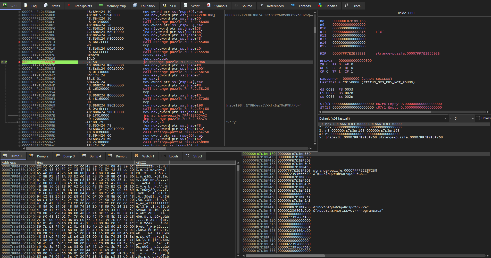
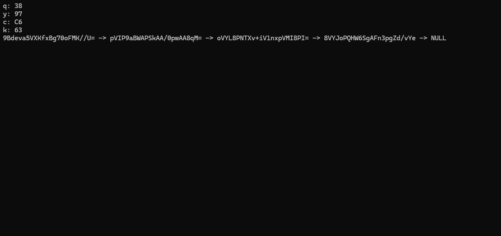
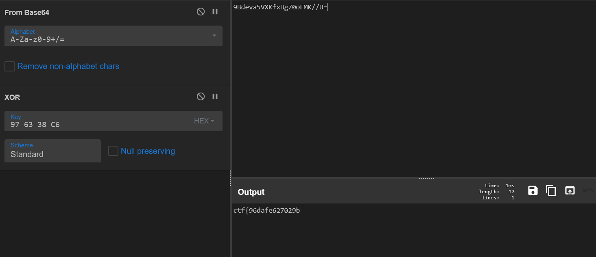

Challenge Name: strange-puzzle¶
Description¶
We found this strange binary file. It seems to be some kind of puzzle. Can you connect the dots in pairs and uncover the hidden message? We suspect it holds a fragmented key to something valuable to you...
Initial Analysis¶
We have a PE executable file. We will do a static analysis in Ghidra and maybe debug with x64dbg, but first, let's run it:
We can see some random characters, each pointing to each other and a structure that looks like a simply linked list. Now, we will go into Ghidra and statically analyze the binary so maybe we can identify some functions and rename them.
Static Analysis¶
During the static analysis, I have found the following interesting functions:
- offset 6810 ->
mainfunction - offset 5010 ->
key generator - offset 43a0 ->
Crypto-memset - offset 50d0 ->
decryptor - offset 4d80 ->
init_meta_arr - offset 8c20 ->
~basic_string<> - offset 5710 ->
insert_q - offset 5bf0 ->
insert_y - offset 6110 ->
insert_c - offset 6510 ->
insert_k - offset 4a90 ->
qykc_printer - offset 4550 ->
linked_list_printer - offset 4f80 ->
free - offset 4750 ->
lookup_key - offset 5530 ->
anti-debug-check
The renamed main function will look like this:
int __cdecl main(int _Argc,char **_Argv,char **_Env) {
// ... variable declarations ...
// Anti-debug and decryption setup
local_18 = DAT_14003c180 ^ (ulonglong)auStack_6e8;
keyGenerator(local_28,local_38);
// Initial Decryptor Calls (Setup for the puzzle)
decryptor(local_5c0,local_688,local_28,(longlong)local_38);
init_meta_arr(local_138,extraout_RAX);
// ... (Repeated for other segments) ...
// The Main Puzzle Logic: Insertions
bVar1 = see-anti-debug();
local_6a0 = (undefined4)CONCAT71(extraout_var,bVar1);
// Insert Q
local_608 = (_String_val<> *)FUN_140006d90(local_610,local_138);
insert_q(local_260,local_608,(longlong)DAT_14003f348);
FUN_140004490(DAT_14003f418,local_260);
// Insert Y
local_5f8 = (_String_val<> *)FUN_140006d90(local_600,local_1b8);
insert_y(local_280,local_5f8,(longlong)DAT_14003f348);
FUN_140004490(DAT_14003f418,local_280);
// Insert C
local_5e8 = (_String_val<> *)FUN_140006d90(local_5f0,local_b8);
insert_c(local_2a0,local_5e8,(longlong)DAT_14003f348);
FUN_140004490(DAT_14003f418,local_2a0);
// Insert K
local_5d8 = (_String_val<> *)FUN_140006d90(local_5e0,local_238);
insert_k(local_2c0,local_5d8,(longlong)DAT_14003f348);
FUN_140004490(DAT_14003f418,local_2c0);
// Printers
qykcprinter((longlong)DAT_14003f348);
linkedListPrinter(DAT_14003f418);
// ... Cleanup ...
return iVar2;
}
The code is too heavy for full static analysis, so we will jump into x64dbg.
Dynamic Analysis¶
First, we will analyze what the 4 main decryption functions decrypt. Going into the debugger and setting a breakpoint before the decryptor function returns, running it 4 times yields these SHA-256 hashes:
3f355c177a1aae6de43e1fd3072f8daf27d18d1fe42a8eea6423fc41b3444fa8930a35c032397b78aded15cebd481e7162927f2bbab721edf107f1f5ef3baf08bbbd841d3c9f33c10c73cd972119d5be1fec8fa2bd40175a732ec91c0399423d
Now, we will analyze the insert functions to see how the insertions are made and why some of them are failing (returning "empty"). We can already suppose that in order to get the flag, we need to fill all the letters.
Analyzing insert_q¶
Going into insert_q, we see some anti-debug checks:
while( true ) {
bVar1 = FUN_140006ef0(&local_b0,&local_98);
if (!bVar1) break;
// ... code checking for processes ...
decryptor(local_50,local_148,local_20,(longlong)local_30);
// ...
}
Here, multiple strings like ghidra.exe and ollydbg.exe are decrypted, so we will jump further with the Hide Debugger option in x64dbg (or patch the jump).
The critical part is here:
if (cVar2 == '\0') {
// Dependency Check: Looks for 'y' inside insert_q
local_128 = lookupKey(param_3,local_110,'y');
local_168 = FUN_1400089d0(local_128);
~basic_string<>(local_110);
if (local_168 == '\0') {
// Failure path -> "empty"
FUN_140008c50(param_1,local_90);
// ... cleanup ...
}
else {
// Success path -> Decrypts flag part!
FUN_1400048e0(param_3,0x79);
base(param_2,param_1);
// ... cleanup ...
}
}
else {
// Failure path -> "empty"
FUN_140008c50(param_1,local_90);
// ...
}
This is the whole logic that we need to bypass. As we can see, in order to insert q, it checks if y is already inserted. Since insert_q runs before insert_y, this is always false.
We need to bypass this check. We will set a breakpoint at the ASM instruction:
Like in this picture:

Now, watching the assembly, we see that we need to make the jump. In order to do that, we will modify the ZF flag register to 1, step over, and then we will be inside the if.
We do the same at the second if (the dependency check) to force execution into the else condition:
The function that makes the filling is at offset 48e0. Just execute the function and go next into the insert_y function.
For insert_y, insert_k, and insert_c, the logic is the same: we need to reach the 48e0 offset function (the Updater) to fill the place. To do that, just watch the assembly instructions, breakpoint at jump instructions (JZ/JNZ), and see if you need to jump or step over to force the path to 48e0.
The Solution¶
After all 4 functions are executed with our patches, we can simply step over the qykc_print and list_printer functions and watch the console:

As we see in the picture, the output completely changed. The 4 letters now display a Hex Key and the flags are some Base64 encoded strings.
We go to CyberChef and make the following setup:
- From Base64
- XOR (with the Key displayed by the 4 letters:
97 63 38 C6)
As we can see in the picture, part of the flag is being decrypted. We will do that for all the Base64 strings displayed, concatenate the parts, and we will have the final flag.
